CASTIGO DIVINO
O SÉTIMO SELO
“Quando JESUS abriu o “Sétimo Selo”, houve no Céu um silêncio durante cerca de meia hora”... (Na tradição profética, um silêncio solene precede e anuncia a vinda de JAVÉ, que é o nome de DEUS PAI. A abertura do Sétimo Selo anunciou a realização completa do julgamento Divino sobre toda a maldade.)
AS ORAÇÕES DOS SANTOS APRESSAM
A VINDA DO GRANDE DIA
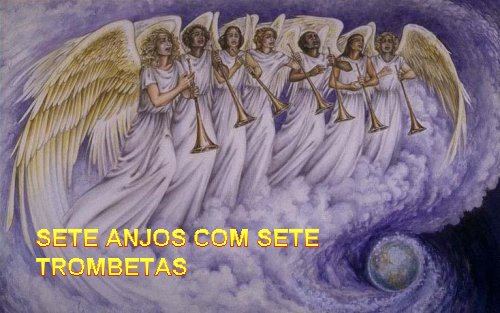
(João continua falando) “Vi então os “Sete Anjos” que estão diante de DEUS: deram-lhes “Sete Trombetas”. Outro Anjo veio se postar junto ao Altar (Altar dos Perfumes), com um turíbulo de ouro (È o turíbulo de fogo que servia para transportar as brasas acesas do Altar dos Holocaustos para o Altar dos Perfumes). Deram-lhe uma grande quantidade de incenso para que oferecesse em favor das orações de todos os Santos, sobre o Altar de ouro que está diante do trono. E da mão do Anjo, a fumaça do incenso pelas orações dos Santos subiu diante de DEUS. O Anjo tomou depois o turíbulo, encheu-o com o fogo do Altar e o atirou a Terra; seguiram-se trovões, clamores, relâmpagos e um terremoto”. (As Orações são hinos de louvor a DEUS e também de súplica, implorando a Justiça Divina, que se manifesta punindo a humanidade, enviando calamidades conforme o toque das trombetas).
AS QUATRO PRIMEIRAS TROMBETAS
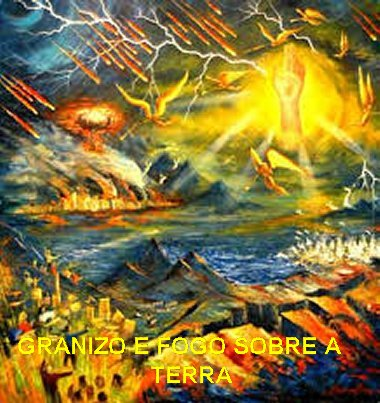
A QUINTA TROMBETA
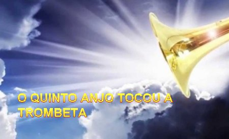
“O aspecto dos gafanhotos era semelhante ao de cavalos preparados para uma batalha: sobre sua cabeça parecia haver coroas de ouro e suas faces eram como faces humanas; tinham cabelos semelhantes ao cabelo das mulheres e dentes como os do leão; tinham couraças como que de ferro, e o barulho de suas asas era como o ruído de carros com muitos cavalos, correndo para um combate; eram ainda providos de caudas semelhantes à dos escorpiões, com ferrões: nas suas caudas estava o poder de atormentar os homens durante cinco meses. Como rei eles tinham sobre si o Anjo do Abismo, cujo nome em hebraico é “Abaddon” e, em grego, “Apollyon” (Os dois nomes significam: “Destruição” e “Destruidor”) (Em outras palavras, o Apóstolo João está anunciando a libertação dos poderes do mal com o objetivo de castigar os inimigos de JESUS).“O primeiro Ai” passou. Eis que depois destas coisas vêm ainda “dois Ais”...
A SEXTA TROMBETA
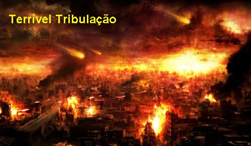
A IMINÊNCIA DO CASTIGO FINAL
“Vi depois outro
Anjo, forte, descendo do Céu: trajava-se com uma nuvem e sobre sua cabeça estava
o 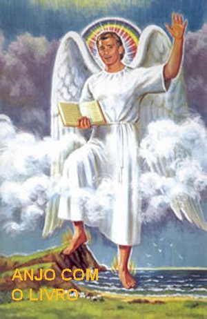
O LIVRINHO DOCE E AMARGO
(Ele renova a Missão de João, tornando-a mais precisa)
“A voz do Céu que eu tinha ouvido tornou então a me falar: “Vai, toma o livrinho aberto da mão do Anjo que está em pé sobre o mar e sobre a terra”. Fui, pois, ao Anjo e lhe pedi que me entregasse o livrinho. Ele então me disse:“Toma-o e devora-o; ele te amargará o estômago, mas em tua boca será doce como mel”.Tomei o livrinho da mão do Anjo e o devorei: na boca era doce como mel; quando o engoli, porém, meu estomago se tornou amargo (Doce, a mensagem anuncia o triunfo da Igreja; amarga, porque profetiza também seus sofrimentos, porque para muitos suas palavras será ocasião de julgamento e condenação). Disseram-me então”: “É necessário que continues ainda a profetizar contra muitos povos, nações, línguas e reis”. (Final do 10º Capítulo)
AS DUAS TESTEMUNHAS
Deram-me depois um caniço, semelhante a uma vara, dizendo:“Levanta-te e mede o Templo de DEUS (O Templo, coração de Jerusalém, Cidade Santa, representa a Igreja; cercado pelos pagãos, os fiéis de CRISTO serão preservados, como o Resto de Israel. Por esse motivo foi dada a ordem para medir o Templo, a fim do mesmo acomodar todos os fiéis), o Altar e os que nele adoram. Quanto ao átrio externo do Templo, deixa-o de lado e não o meças, pois ele foi entregue às nações que durante quarenta e dois meses (A perseguição da Besta em Roma) calcarão aos pés a Cidade Santa. Às minhas duas testemunhas, (É voz da maioria que João está anunciando, que da Igreja inteira no meio das tribulações, continuará dando seu testemunho de fé em CRISTO) “porém, permitirei que profetizem vestidas de saco, durante mil duzentos e sessenta dias” (três anos e meio). Estas são as duas oliveiras e os dois candelabros que estão diante do SENHOR da Terra (Eles simbolizam provavelmente as duas personagens encarregadas de edificar o novo Templo, a Igreja de CRISTO. Pensou-se em Pedro e Paulo, martirizados em Roma sob Nero). Caso alguém queira prejudicá-las, sairá de sua boca um fogo que devorará seus inimigos; sim, se alguém pretendesse prejudicá-las, é deste modo que deveria morrer. Elas têm o poder de fechar o Céu para que não caia nenhuma chuva durante os dias de sua missão profética. Têm ainda, o poder de transformar as águas em sangue, e de ferir a Terra com todo tipo de flagelos, quantas vezes o quiserem. Quando terminarem seu testemunho, a Besta (a Fera ou o Monstro, que é a personificação do mal, que pode ser o Imperador Nero, que é o tipo do Anticristo) que sobe do Abismo combaterá contra elas (Os dois Profetas ou duas Testemunhas, que simbolizam a Igreja) , e vencê-las-á e as matará. Seus cadáveres (Dos dois Profetas) ficarão expostos na Praça da Grande Cidade (A Grande Cidade de Babilônia, que é Roma) que se chama simbolicamente Sodoma e Egito (Por causa de seus dois crimes: impudicícia e opressão dos fiéis de CRISTO), onde também o SENHOR delas foi crucificado. E homens de todos os povos, raças, línguas e nações verão seus cadáveres (das duas Testemunhas) durante três dias e meio, impedindo que sejam colocados numa sepultura. Os habitantes da Terra se rejubilarão com isso, (evidentemente aqueles que não amam CRISTO) ficarão alegres e trocarão presentes, pois estes dois profetas haviam atormentado os habitantes da Terra (Com seus Conselhos, Penitências e súplicas de Conversão do povo). Contudo, depois dos três dias e meio, um sopro de vida, vindo de DEUS, penetrou-os, e eles se puseram em pé. E um grande medo se apoderou dos que os contemplavam. (Eu João) Ouvi então uma forte voz que dizia a eles (aos dois mortos): “Subam para aqui!” “E eles subiram para o Céu na nuvem, aos olhos de seus inimigos. Naquela mesma hora houve um grande terremoto: a décima parte da cidade ruiu e sete mil pessoas morreram na catástrofe” (Número simbólico, significando pessoas de todas as categorias, em grande quantidade). “Os sobreviventes ficaram apavorados e deram glórias ao DEUS do Céu”.
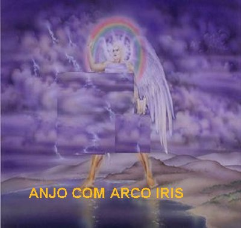
“O “Segundo Ái” passou. Eis que chega rapidamente o “Terceiro Ái”. E o “Sétimo Anjo” tocou... [Acontecerá à queda da Babilônia (a Cidade de Roma), que será descrita no Capitulo 17]. Houve então fortes vozes no Céu, clamando”:
“O império do mundo passou agora para NOSSO SENHOR e Seu CRISTO, e ELE reinará pelos séculos dos séculos.”
“Os “Vinte e Quatro Anciãos” que estão sentados em seus tronos diante de DEUS prostraram-se e adoraram a DEUS, dizendo”:
“Nós te damos graças, SENHOR DEUS Todo-Poderoso, Aquele-que-é, Aquele-que-vem, e Aquele-que-era, porque assumiste o TEU grande poder e passaste a reinar. As nações tinham se enfurecido, mas a tua ira chegou, como também o Tempo de julgar os mortos, de dar a recompensa aos TEUS servos, os Profetas, aos Santos e aos que temem o TEU Nome, pequenos e grandes, e de exterminar os que exterminam a Terra”. (Esperava-se cenas terríveis nesta Sétima Trombeta, mas apareceu um panorama bem diferente, o anúncio da realização das promessas de DEUS. O mal será plenamente vencido; chegou o tempo da libertação e da paz, a realização do Reino de DEUS).
“O Templo de DEUS
que está no Céu (O Templo do Céu não é mais
o Templo de Jerusalém) 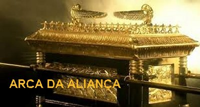
VISÃO DA MULHER E DO DRAGÃO
(Do capitulo 12 ao 14 continuam
as descrições dos prelúdios do
“fim do mundo”, apresentando a luta atual do
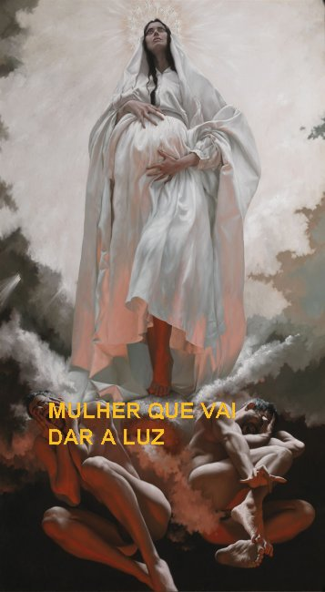
“Um sinal grandioso apareceu no Céu: uma Mulher (A Mulher dá à luz na dor AQUELE que será o MESSIAS. Ela é tentada por satanás, que a persegue, bem como à sua descendência. Ela representa o Povo Santo dos tempos messiânicos, e, portanto, a Igreja em sua luta. É possível que João pense em MARIA, NOSSA SENHORA, a Nova Eva, a filha de Sião, que deu nascimento ao MESSIAS, a Mãe que JESUS) vestida com o sol, tendo a lua sob os pés e sobre a cabeça uma coroa de doze estrelas; estava grávida e gritava atormentada pelas dores do parto. Apareceu então outro sinal no Céu: um grande Dragão, cor de fogo, com sete cabeças e dez chifres, e sobre as cabeças sete diademas; (É satanás, que os “LXX”- Setenta", traduzem por “Diabo”. Na tradição judaica a Serpente ou o Dragão simbolizava o poder do mal, hostil a DEUS e a seu povo, e que DEUS devia destruir no “Fim dos Tempos”.) sua cauda arrastava um terço das estrelas do Céu, lançando-as para a Terra. (Alusão à queda dos Anjos Maus, por não acatarem a ordem de DEUS quando ELE, no inicio da criação, revelou a autoridade de CRISTO, e os Anjos Maus foram arrastados por Satanás para a Terra). O Dragão colocou-se diante da Mulher que estava para dar à luz, a fim de lhe devorar o Filho, tão logo nascesse. Ela deu à luz, a um filho, um varão, (É o MESSIAS considerado primeiro em Sua realidade Pessoal, e depois como Cabeça ou Chefe do Novo Israel, também denominado FILHO do HOMEM e SERVO de JAVÉ) que irá reger todas as nações com um cetro de ferro. Seu FILHO, porém, foi arrebatado para junto de DEUS e de seu trono, (Alusão à Ascensão e ao triunfo de CRISTO, que provocará a queda do Dragão. O triunfo da criança é evocado aqui logo após o seu nascimento) e a Mulher fugiu para o deserto, (Refúgio tradicional dos perseguidos no Antigo Testamento. A Igreja deve fugir para longe do mundo e se alimentar com a vida Divina. Ela permanecerá aí por três anos e meio) onde DEUS lhe havia preparado um lugar em que fosse alimentada por mil duzentos e sessenta dias, ou seja, três anos e meio.
“Houve então uma batalha no Céu, Miguel (Este versículo nº 7 representa um parêntesis na narrativa do Apóstolo São João, pois quer nos lembrar um fato ocorrido no inicio da criação, com a finalidade de evidenciar que aquele Dragão que lutou com o Arcanjo São Miguel, é o mesmo que no Apocalipse queria matar o filho da Mulher grávida. Miguel é o poderoso comandante Divino e quer dizer: “Quem é como DEUS?”) e seus Anjos guerrearam contra o Dragão. O Dragão batalhou, juntamente com seus anjos, mas foi derrotado, e não se encontrou mais um lugar para eles no Céu. Foi expulso o grande Dragão, a antiga Serpente, o chamado Diabo ou Satanás, sedutor de toda a Terra habitada, foi expulso do Céu para a Terra, e seus Anjos foram expulsos com ele. Ouvi então uma voz forte no Céu, proclamando”:
“Agora atuou a salvação, o poder e a realeza do nosso DEUS, e a autoridade do Seu CRISTO: porque foi expulso o acusador (o Demônio) dos nossos irmãos, aquele que os acusava dia e noite diante do nosso DEUS. Eles (os nossos irmãos), porém, o venceram pelo Sangue do Cordeiro e pela palavra que testemunharam, pois desprezaram a própria vida até a morte. Por isso, alegrai-vos, ó Céu, e vós que o habitais! Ai da terra e do mar, porque o Diabo desceu para junto de vós cheio de grande furor, sabendo que lhe resta pouco tempo”.
“Ao ver que fora expulso para a Terra, o Dragão pôs-se a perseguir a Mulher que dera à luz o filho varão. Ela, porém, recebeu as duas asas da Grande Águia para voar ao deserto, (As asas que a mulher recebeu para fugir do Dragão simboliza a proteção que a Igreja receberá do poder de DEUS) para o lugar em que, longe da Serpente, é alimentada por um tempo, tempos e a metade de um tempo (três anos e meio). A Serpente, então, vomitou água como um rio atrás da Mulher, a fim de submergi-la (Satanás vai lançar o Império Romano, como um rio, para engolir a Igreja). A Mulher, porém, foi socorrida pela terra, que abriu a boca (abriu uma imensa depressão) e engoliu o rio que o Dragão vomitara. Enfurecido por causa da Mulher, o Dragão foi então guerrear contra o resto dos seus descendentes (os fiéis), os que observam os Mandamentos de DEUS e mantêm o Testemunho de JESUS”. (Em diversas oportunidades, no Antigo Testamento encontramos passagens em que o “povo de DEUS” é comparado com uma mulher que está para dar a luz, principalmente em Isaias, Jeremias, Ezequiel. Assim também podemos dizer que aqui, a mulher descrita por João pode simbolizar o “povo de DEUS”). (Para a Igreja do Primeiro Século a luta movida pelo Dragão simboliza as perseguições e crueldades impostas pelo Império Romano). (Hoje a mesma luta contra a Igreja existe, naturalmente com outras bandeiras). (Final do 12º Capítulo)
O DRAGÃO TRANSMITE SEU PODER À BESTA
O Apóstolo João continuou descrevendo: “Coloquei-me depois sobre a praia do mar. Vi então uma“Besta”
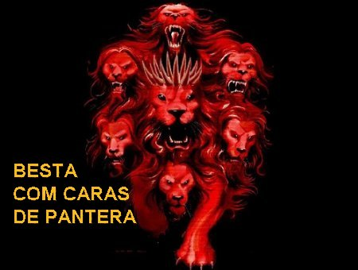
que subia do mar. Tinha dez chifres e sete cabeças; sobre os chifres havia dez diademas e sobre a cabeça um nome blasfemo. A Besta que eu vi parecia “uma pantera”; seus pés, contudo, eram como os de “um urso” e sua boca como a mandíbula de “um leão”. E o Dragão lhe entregou seu poder, seu trono, e uma grande autoridade (É de satanás que a Besta recebe toda a sua autoridade). Uma de suas cabeças parecia mortalmente ferida, mas a ferida mortal foi curada (Alusão a alguma restauração no Império Romano momentaneamente abalado, por exemplo, com a morte de Cesar, ou com as confusões que sucederam à morte de Nero. Assim, a Besta ferida e curada quer significar uma cópia de CRISTO morto e ressuscitado!) Cheia de admiração, a Terra inteira seguiu a Besta e adorou o Dragão por ter entregue a autoridade à Besta; e adorou a Besta, dizendo:“Quem é comparável a Besta, e quem pode lutar contra ela?” (Aqui é importante esclarecer, os que adoraram a Besta são aqueles que não acreditavam em JESUS). Foi-lhe dada uma boca para proferir palavras insolentes e blasfêmias, e também poder para agir durante quarenta e dois meses. Ela então abriu sua boca em blasfêmias contra DEUS, blasfemando contra Seu Nome, Seu Tabernaculo e os que habitam no Céu. Deram-lhe permissão para guerrear contra os Santos e vencê-los; e lhe foi dada autoridade sobre toda tribo, povo, língua e nação. Adoraram-na, então, todos os “habitantes da Terra” (Já sabemos que na linguagem do Apocalipse, “habitantes da Terra” são os que não acreditam em JESUS) cujo nome não está escrito desde a fundação do mundo no “Livro da Vida” do Cordeiro imolado. Se alguém tem ouvidos, ouça”:“Se alguém está destinado à prisão, irá para a prisão; se alguém deve morrer pela espada, é preciso que morra pela espada”. (Esta frase pode significar que a Igreja deve se manter firme, sem resistir, custe o que custar, aos seus perseguidores, ou que o castigo destes perseguidores será inexorável. No momento certo DEUS realizará o castigo na forma da Lei). “Nisto repousa a perseverança e a fé dos Santos”.
O FALSO PROFETA A SERVIÇO DA BESTA
“Vi depois outra
Besta sair da terra: tinha dois chifres como um cordeiro, mas falava como um
dragão. (Esta segunda Besta será designada
de “falso profeta”
. Antes de descrever a vinda do FILHO do HOMEM, João
mostra a atuação dos falsos cristos,
“a primeira Besta”, e dos falsos profetas,
“a segunda Besta”, anunciados por JESUS)
“Esta segunda Besta exerce toda a autoridade a serviço da primeira Besta, fazendo
com que a Terra e seus habitantes (Os que não
crêem em JESUS) adorem a primeira
Besta, cuja ferida mortal tinha sido curada. Ela opera grandes maravilhas: até mesmo
a de fazer descer fogo do Céu sobre a Terra, à vista dos homens. Em face das facilidades
que lhe foi concedido realizar a serviço da Segunda Besta, ela seduz os habitantes da
Terra (Os que não crêem em JESUS)
, incitando-os a modelar uma imagem em honra
da Primeira Besta que tinha sido ferida pela espada, mas voltou à vida.
(Nós os cristãos temos o ESPÍRITO SANTO que sempre realizou
prodígios na Igreja a fim de estimular a fé em CRISTO. No caso presente do Maligno,
a Segunda Besta querendo ser uma imitação do ESPÍRITO, assim como o Dragão e a primeira
Besta quiseram ser uma imitação do PAI ETERNO e do FILHO, na realidade eles são uma caricatura
da TRINDADE SANTÍSSIMA). “Foi-lhe
dado (a Segunda Besta) até mesmo o poder de infundir 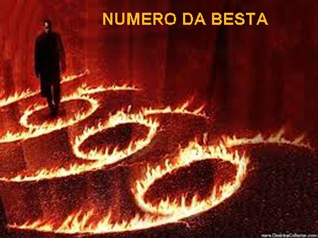
(João faz questão de esclarecer): “Aqui é preciso discernimento! Quem é inteligente calcule o numero da Besta, pois é um número de homem: seu número é “666”!! [Em grego e em hebraico, cada letra tinha um valor numérico segundo o lugar no alfabeto. O número de um nome é o total das suas letras. Aqui “666” seria César-Neron (em letras hebraicas), e César-Deus (em letras gregas)].(Entretanto, todas as mensagens do Apocalipse deixam evidente que o poder do mal jamais poderá vencer o povo de DEUS. Para afirmar isto usando os números, como apresentados acima, seremos conduzidos a interpretar que o Dragão é também um poder humano e como tal, jamais poderá vencer os fiéis de CRISTO) (Final do 13º Capítulo)
OS RESGATADOS DO CORDEIRO
(Os sectários da Besta são
marcados com o número do seu nome. João esclarece que os fiéis do Cordeiro são
escritos no “Livro da Vida”
com o nome do Cordeiro JESUS e com o nome
do ETERNO PAI. É o “resto”
que 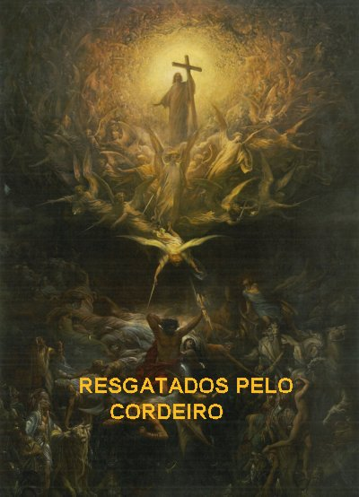
Depois João teve a seguinte visão: “Eis que o Cordeiro estava de pé sobre o monte Sião com cento e quarenta e quatro mil pessoas (João quer realçar que eram muitas pessoas) que traziam escritos sobre a fonte o Nome DELE (JESUS) e o Nome do Seu PAI. E ouvi um rumor que vinha do Céu, semelhante a um fragor de águas e ao ribombo de um forte trovão; o rumor que eu ouvi era como o som de harpistas tocando suas harpas. Cantavam um cântico novo (O cântico novo celebra a nova libertação do povo de DEUS e a nova ordem instaurada pelo Cordeiro imolado) diante do trono, dos Quatro Animais (os Quatro Anjos do SENHOR) e dos Anciãos. Ninguém podia aprender o cântico, exceto os cento e quarenta e quatro mil que foram resgatados da Terra (E podem ser convidados para as núpcias do Cordeiro). Estes são os que não se contaminaram com mulheres: são virgens (Em sentido figurado a luxuria designa tradicionalmente a idolatria) (Para compreendermos com clareza esta frase, temos que lembrar a maneira de se expressar no Antigo Testamento. Muitas vezes a infidelidade a DEUS era considerada pelo cultivo de adoração aos ídolos, isso porque, DEUS era apresentado como o verdadeiro esposo do povo eleito.) Estes seguem o Cordeiro onde quer que ele vá. (Assim como Israel seguia JAVÉ no tempo do êxodo, o novo povo dos resgatados segue o Cordeiro até ao deserto, onde se realizarão os novos esponsais). Estes foram resgatados dentre os homens, como primícias para DEUS e para o Cordeiro. Na sua boca jamais foi encontrada mentira: são íntegros”. (As primícias representam toda a messe, os primogênitos representam toda a família. As vítimas oferecidas ao DEUS verdadeiro deviam ser sem defeito. Também é importante realçar, que com esta visão caminhamos para o futuro, para o tempo da vitória final. No Monte Sião, em Jerusalém, era onde estava construído o Templo, usado aqui como local da manifestação gloriosa e da vitória do Cordeiro e de Seu PAI, o DEUS ETERNO CRIADOR).
OS ANJOS ANUNCIAM A HORA DO JULGAMENTO
(Três Anjos convidam os ímpios perseguidores a se converterem, mas os ímpios se obstinarão)
“Vi depois outro
Anjo que voava no meio do Céu, com um evangelho eterno para anunciar
(O Evangelho 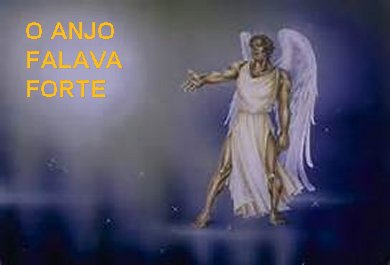
“Outro Anjo, um segundo, continuou falando com voz bem alta:” “Caiu, caiu, a Babilônia, (No Antigo Testamento a Babilônia é colocada como símbolo dos inimigos do povo de DEUS) a Grande, a que embebedou todas as nações com o vinho do furor da sua prostituição.” (O vinho do furor é uma imagem corrente nos Profetas; a prostituição se refere à idolatria; foi derramado o furor Divino prometido aos idólatras).
“Um terceiro Anjo continuou em alta voz:” “Se alguém adora a Besta e a sua imagem, e recebe a marca sobre a fronte ou na mão, esse também beberá o vinho do furor de DEUS, derramado sem mistura na taça da Sua ira; será atormentado com fogo e enxofre (O lago ardente de fogo e enxofre é o lugar de punição aos ímpios) diante dos Santos Anjos e diante do Cordeiro. A fumaça do seu tormento sobe pelos séculos dos séculos: os que adoram a Besta e a sua imagem, e quem quer que receba a marca do seu nome nunca têm descanso, dia e noite... Nisto repousa a perseverança dos Santos (aqueles que levam a sério os seus compromissos), os que guardam os Mandamentos de DEUS e a fé em JESUS CRISTO”.
“Ouvi então uma voz do Céu, dizendo:”“Escreve: felizes os mortos, os que desde agora morrem no SENHOR. Sim, diz o ESPÍRITO, que descansem de suas fadigas, pois suas obras os acompanham”.
A CEIFA E A VINDIMA DAS NAÇÕES
“Depois disso olhei: havia uma nuvem branca, e sobre a nuvem Alguém sentado, semelhante a um FILHO DE HOMEM, com uma coroa de ouro na cabeça e nas mãos uma foice afiada. Nisto outro Anjo saiu do Templo gritando em alta voz ao que estava sentado sobre a nuvem:” “Lançai tua foice e ceifa. Chegou à hora da ceifa, pois a seara da Terra está madura”. “O que estava sentado na nuvem lançou então sua foice sobre a Terra, e a Terra foi ceifada”. (Em outras passagens na Bíblia a colheita do trigo também simboliza o Julgamento ou a Condenação dos infiéis).
“Nisto saiu do Templo que está no Céu outro Anjo, também ele trazendo uma foice afiada. E também outro Anjo, que tem poder sobre o fogo, saiu do Altar (Do Altar sobe o sangue dos mártires e a oração dos Santos, que o Anjo leva até DEUS para pedir justiça) e gritou em alta voz ao que segurava a foice afiada: “Lança a tua foice afiada e vindima os cachos da videira da Terra, pois suas uvas amadureceram”. (Também se refere a Condenação dos infiéis) “O Anjo lançou então sua foice afiada na Terra e vindimou a videira da Terra, lançando-a depois no grande lagar do furor de DEUS”. “O lagar foi pisado fora da cidade” (O extermínio das nações pagãs deve ser efetuado fora de Jerusalém) “e dele saiu sangue até chegar aos freios dos cavalos, numa extensão de mil e seiscentos estádios”. (Ou seja, alcançando todas as partes da Terra) (Final do 14º Capítulo)
O CÂNTICO DE MOISÉS E DO CORDEIRO
“Vi ainda outro sinal grande e maravilhoso no Céu: Sete Anjos com Sete Pragas, as últimas, pois com estas o furor de DEUS estará consumado. Vi também como que um mar de vidro misturado com fogo, e os que venceram a Besta, sua imagem e o número do seu nome: estavam de pé sobre o mar de vidro e seguravam as harpas de DEUS, cantando o cântico de Moisés, (Um cântico de libertação evocando o triunfo do SENHOR e dos fiéis) o servo de DEUS, e o cântico do Cordeiro”:
“Grandes e maravilhosas são as tuas obras, ó SENHOR DEUS, Todo-Poderoso; TEUS caminhos são justos e verdadeiros, ó Rei das Nações. Quem não temeria, ó SENHOR, e não glorificaria o TEU Nome? Sim! Só TU és Santo! Todas as nações virão se prostrar diante de TI, pois TUAS justas decisões se tornaram manifestas.”
AS SETE PRAGAS DAS SETE TAÇAS
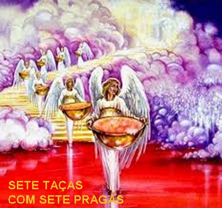
“Depois disto, vi ser aberto o Templo da Tenda do Testemunho que está no Céu, e dele saíram os “Sete Anjos” com as “Sete Pragas”. Estavam vestidos de linho puro, resplandecente, e cingidos à altura do peito com cintos de ouro. Um dos Quatro Animais (dos Quatro Anjos do SENHOR) entregou aos “Sete Anjos Sete Taças de Ouro”, cheias de furor do DEUS que vive pelos séculos dos séculos. O Templo se encheu de fumaça por causa da glória de DEUS e do seu poder, de modo que ninguém podia entrar no Templo, (A evocação da glória presente no Templo é o sinal da presença de DEUS no meio do seu povo durante os tempos messiânicos) até que estivessem consumadas as “Sete Pragas dos Sete Anjos”. (Final do 15º Capítulo)
A ORDEM FOI DADA
“Ouvi depois uma forte voz que vinha do Templo, dizendo aos Sete Anjos”: “Ide e espalhai pela Terra as Sete Taças do furor de DEUS”. O “Primeiro Anjo” saiu e espalhou sua taça pela Terra... E uma úlcera maligna e dolorosa atingiu as pessoas que traziam a marca da Besta e as que adoravam a sua imagem. (Aqueles que desconheciam e não amavam JESUS) O “Segundo Anjo" "espalhou sua taça pelo mar... E este se transformou em sangue, como de um morto, de modo que todos os seres que viviam no mar morreram. O “Terceiro Anjo” espalhou sua taça pelos rios e pelas fontes... E (as águas) transformaram-se em sangue. Ouvi então o Anjo das águas dizer:
“Justo és, Aquele-que-é, Aquele-que-era e Aquele-que-vem, ó SANTO porque julgaste estas coisas; pois estes derramaram sangue de Santos e Profetas, e TU lhes deste sangue para beber. Eles o merecem!”
“Ouvi então que o Altar dizia”:
“Sim, SENHOR, DEUS Todo-Poderoso, TEUS julgamentos são verdadeiros e justos.”
“O" "Quarto Anjo”derramou sua taça sobre o Sol... E a este foi permitido abrasar os homens com fogo. Os homens, então, abrasados por um calor intenso, puseram-se a blasfemar contra o Nome do DEUS que tem Poder sobre tais Pragas. Mas não se converteram para LHE tributar glória...
(Estas Quatro primeiras Taças da Ira de DEUS incide sobre a humanidade pecadora. Tempestades, mortandades, secas abrasadoras, trevas, calamidades servem como sinais de alerta e primordialmente como convite, para todos trilharem o caminho do direito, da justiça e do amor fraterno).
O “Quinto Anjo” derramou sua taça sobre o trono da Besta... (Roma tipo da cidade hostil a DEUS) E o seu reino ficou em trevas: os homens mordiam a língua de dor, e blasfemaram contra o DEUS do Céu por causa das suas dores e úlceras. Mas não se converteram da sua conduta...
"O" “Sexto Anjo” derramou sua taça sobre o grande Rio Eufrates... E a água do rio secou, abrindo caminho aos Reis do Oriente. (Secando o Eufrates, os Romanos perdem a natural proteção contra os guerreiros Partos, seus inimigos) Nisto vi que da boca do Dragão, da boca da Besta e da boca do falso Profeta saíram três espíritos impuros, como sapos. São, com efeito, espíritos de demônios: fazem maravilhas e vão até aos reis de toda a Terra, a fim de reuni-los para a guerra do Grande Dia do DEUS Todo-Poderoso. (É a reunião de todas as nações pagãs que por fim foram exterminadas por CRISTO) (Eis que EU venho como um ladrão: feliz aquele que vigia e conserva suas vestes, para não andar nu e deixar que vejam a sua vergonha). Eles os reuniram então no lugar que, em hebraico, se chama “Harmagedôn”. (A invasão dos Partos pode indicar o fim do reino do mal. Mas eles tentam reagir buscando aliados, usando de mentira e do embuste para mudar a história. Tentam conseguir apoio dos reis da Terra na luta contra os fiéis de CRISTO)(Harmagedôn é a montanha de Meggido, cidade da planície que costeia a cadeia de montanhas do Carmelo. Este lugar tornou-se um símbolo de desastre para os exércitos que nele se reúnem).
"O" “Sétimo Anjo” finalmente espalhou sua taça pelo ar... Nisto saiu uma forte voz do templo, dizendo: “Está realizado!” Houve então relâmpagos, vozes, trovões, e um forte terremoto; um terremoto tão violento como nunca houve desde que o homem apareceu sobre a Terra. A Grande Cidade se dividiu em três partes, e as cidades das nações caíram. DEUS se lembrou então de Babilônia, a Grande, para lhe dar o cálice do vinho do furor da sua ira. As ilhas todas fugiram e os montes desapareceram; do Céu caiu sobre os homens um granizo pesado, como chuva de talentos. (O talento era uma unidade de peso da antiguidade usado por diversos povos: gregos, romanos, israelitas e outros. O talento variava de 42 a 49 quilos. Então uma queda de granizo de um talento de 42 a 49 quilos, se atingir uma pessoa, pode matá-la) E os homens blasfemaram contra DEUS por causa da praga do granizo, pois o seu flagelo é muito grande. (Estas três últimas Taças foram derramadas sobre Roma, figura do poder humano que se colocou a serviço do mal. Todavia todos estes flagelos não exterminaram toda a humanidade, mas provocaram novas blasfêmias, porque eles não se arrependeram dos seus atos. Todavia, por ordem de DEUS, no final do serviço do Sétimo Anjo, delineou-se o Final da Grande Tribulação) (Final do 16º Capítulo)